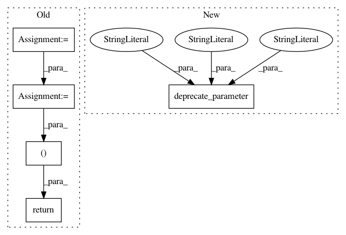

a19d398c1c974eb69d6e8e5e41d65500262089ce,imblearn/under_sampling/_prototype_selection/_edited_nearest_neighbours.py,RepeatedEditedNearestNeighbours,_fit_resample,#RepeatedEditedNearestNeighbours#Any#Any#,298
Before Change
X_, y_, = X_enn, y_enn
if self.return_indices:
idx_under = idx_under[idx_enn]
if b_conv or b_min_bec_maj or b_remove_maj_class:
if b_conv:
if self.return_indices:
X_, y_, = X_enn, y_enn
idx_under = idx_under[idx_enn]
else:
X_, y_, = X_enn, y_enn
break
X_resampled, y_resampled = X_, y_
if self.return_indices:
return X_resampled, y_resampled, idx_under
else:
return X_resampled, y_resampled
After Change
def _fit_resample(self, X, y):
if self.return_indices:
deprecate_parameter(self, "0.4", "return_indices",
"sample_indices_")
self._validate_estimator()
X_, y_ = X, y
self.sample_indices_ = np.arange(X.shape[0], dtype=int)
In pattern: SUPERPATTERN
Frequency: 3
Non-data size: 5
Instances
Project Name: scikit-learn-contrib/imbalanced-learn
Commit Name: a19d398c1c974eb69d6e8e5e41d65500262089ce
Time: 2018-09-13
Author: g.lemaitre58@gmail.com
File Name: imblearn/under_sampling/_prototype_selection/_edited_nearest_neighbours.py
Class Name: RepeatedEditedNearestNeighbours
Method Name: _fit_resample
Project Name: scikit-learn-contrib/imbalanced-learn
Commit Name: a19d398c1c974eb69d6e8e5e41d65500262089ce
Time: 2018-09-13
Author: g.lemaitre58@gmail.com
File Name: imblearn/under_sampling/_prototype_selection/_one_sided_selection.py
Class Name: OneSidedSelection
Method Name: _fit_resample
Project Name: scikit-learn-contrib/imbalanced-learn
Commit Name: a19d398c1c974eb69d6e8e5e41d65500262089ce
Time: 2018-09-13
Author: g.lemaitre58@gmail.com
File Name: imblearn/under_sampling/_prototype_selection/_edited_nearest_neighbours.py
Class Name: AllKNN
Method Name: _fit_resample